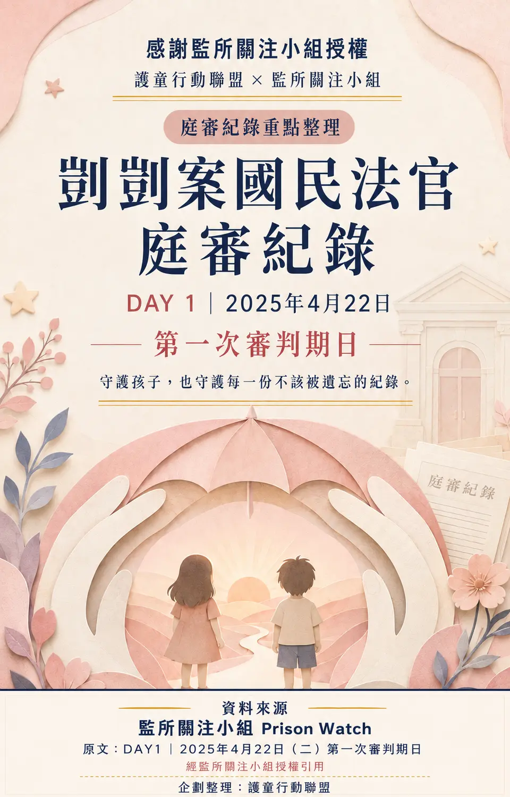

置頂・心得募集
置頂・心得募集
從法院紀錄、案件追蹤到公共倡議，讓重要的事情被看見， 也讓每一個孩子的安全被真正放在第一位。
近期更新的案件文件、活動紀錄、歷史案件與社會觀察，搭乘童趣摩天輪與你相遇。
08.20 · 置頂活動讓我們一起寫下剴剴的故事留下你的感受、疑問與改變期待
 08.20 · 活動紀錄更新反毒駕、反酒駕．凱道大遊行被害者家屬支持與兒少保護倡議
08.20 · 活動紀錄更新反毒駕、反酒駕．凱道大遊行被害者家屬支持與兒少保護倡議
 08.20 · 旁聽紀錄第二次審判期日證人交互詰問與國民法官提問
08.20 · 旁聽紀錄第二次審判期日證人交互詰問與國民法官提問

08.20 · 旁聽紀錄第一次審判期日監所關注小組授權引用 08.16 · 歷史案件傅小弟案公開歷審與制度脈絡
08.16 · 歷史案件傅小弟案公開歷審與制度脈絡
 08.16 · 歷史案件王昊案名字寫進法條之後
08.16 · 歷史案件王昊案名字寫進法條之後
 08.14 · 案件專題萱萱案五次警訊與安全確認
08.14 · 案件專題萱萱案五次警訊與安全確認
 08.14 · 歷史案件內蒙古田田案她沒有等到春天
08.14 · 歷史案件內蒙古田田案她沒有等到春天
 08.13 · 歷史案件栗原心愛事件守不住的問卷
08.13 · 歷史案件栗原心愛事件守不住的問卷
 08.13 · 案件專題林心慈案消失的四天
08.13 · 案件專題林心慈案消失的四天
摩天輪會緩慢轉動；滑鼠移入、觸碰或拖曳時暫停，點選車廂即可閱讀文件。
把公共倡議、被害者支持與兒少保護行動，整理成可以被看見、查閱與記住的共同紀錄。
置頂・心得募集
8月1日，被害者家屬與一群素人爸媽走上凱道，為反毒駕、反酒駕與兒少保護發聲。這不是顏色或立場的競逐，而是失去摯愛的人，仍努力為家人等待公平與正義。
真正值得被看見的，不是人數，不是立場，而是每一位仍願意站出來、替家人與孩子留下聲音的人。
一場活動的價值，不該只由參與人數定義。彼此陪伴、互相理解，讓社會看見被害者家屬與受害孩子，就是繼續前行的力量。
即將到來的庭期與法院程序，一眼掌握。
走進法庭，記下程序、證詞與每一個需要被看見的爭點。紀錄不代替判決，而是讓公共討論有可以核對的起點。
最新授權旁聽紀錄
證言被記下，法庭裡的每一次問答也應被完整看見。
經監所關注小組授權引用，整理證人 Mira、通譯、檢辯交互詰問與國民法官提問，由護童行動聯盟重製為完整旁聽紀錄專頁。
守護孩子，也守護每一份不該被遺忘的紀錄。
經監所關注小組授權引用，整理開庭前說明、開審陳述、爭點確認及事實部分的證據調查程序。
 最新旁聽筆記
最新旁聽筆記
最後陪著他的，只有兩瓶牛奶。
本篇整理當日庭訊程序、檢辯主張與量刑爭點，並清楚區分公開資訊、庭上陳述與尚待法院認定的內容。
以文化記憶、司法紀錄與社會觀察為線索，讓重要議題在紙雕層次與陶土溫度中被重新看見。
08.20 · 最新上傳2026.08.20 · 監所關注小組 × 授權庭審紀錄第二日｜第二次審判期日證人Mira、通譯、交互詰問與國民法官提問，由護童行動聯盟重製為證言長廊。閱讀重製專頁 →
08.20 · 授權旁聽紀錄2026.08.20 · 監所關注小組 × 授權庭審紀錄第一日｜第一次審判期日2025年4月22日國民法官庭審紀錄，由護童行動聯盟重製為滾動專頁。閱讀重製專頁 →
 08.13 · 社會觀察2026.08.13 · 兒虐辨識 × 安全行動看見・聽見之後辨識反覆出現的傷，接住沒有說完的求救，讓保護更早抵達。閱讀專題 →
08.13 · 社會觀察2026.08.13 · 兒虐辨識 × 安全行動看見・聽見之後辨識反覆出現的傷，接住沒有說完的求救，讓保護更早抵達。閱讀專題 →
 08.11 · 古老的傳說2026.08.11 · 文化記憶 × 司法紀錄綁在椅子上的孩子從椅仔姑到剴剴，追問孩子還活著時，為什麼沒有人及時打開那扇門。閱讀專題 →
08.11 · 古老的傳說2026.08.11 · 文化記憶 × 司法紀錄綁在椅子上的孩子從椅仔姑到剴剴，追問孩子還活著時，為什麼沒有人及時打開那扇門。閱讀專題 →
依上傳時間由左向右排列｜可左右滑動瀏覽文章
司法程序追蹤中 三審定讞
三審定讞 上訴審理中
上訴審理中 審理中
審理中 二審中
二審中 二審中一審中
二審中一審中回看不同年代與地區的兒少案件，不為重複傷痛，而是辨識制度如何失守，以及改變從何處開始。
 大陸｜福建MAINLAND CHINA HISTORICAL CASE福建琪琪案村口一直等不到的媽媽｜十二歲女孩的求救與遲來的司法追問
台灣｜2005TAIWAN HISTORICAL CASE人皮燈籠案／刺青針刑虐童案正文統一稱傅小弟｜公開歷審最終16年
台灣｜2011TAIWAN HISTORICAL CASE王昊案名字寫進了法條，保護不能停在紙上
大陸｜內蒙古MAINLAND CHINA HISTORICAL CASE內蒙古田田案她沒有等到春天｜二審維持原判
日本｜千葉JAPAN HISTORICAL CASE栗原心愛事件守不住的問卷，與沒有走完的冬天
大陸｜福建MAINLAND CHINA HISTORICAL CASE福建琪琪案村口一直等不到的媽媽｜十二歲女孩的求救與遲來的司法追問
台灣｜2005TAIWAN HISTORICAL CASE人皮燈籠案／刺青針刑虐童案正文統一稱傅小弟｜公開歷審最終16年
台灣｜2011TAIWAN HISTORICAL CASE王昊案名字寫進了法條，保護不能停在紙上
大陸｜內蒙古MAINLAND CHINA HISTORICAL CASE內蒙古田田案她沒有等到春天｜二審維持原判
日本｜千葉JAPAN HISTORICAL CASE栗原心愛事件守不住的問卷，與沒有走完的冬天
截至 2026 年 8 月。每一個數字，都是志工夥伴實際到場、記錄、聲援與陪伴留下的足跡。
持續記錄司法程序與重要庭訊，陪伴案件走過漫長審理。
把兒少安全、被害者支持與制度倡議帶進公共空間。
讓關注不只停留在文字，也化為具體的陪伴與支持。
記錄案件審理進程、重要庭訊與司法程序。
整理公開庭期、裁判及可查證資訊。
將分散資訊整理成易懂脈絡，推動兒少保護制度落實。
尊重家屬的聲音，讓漫長司法路上的努力被看見。
四款志工識別延續「守護、家庭、燈火與前行」的共同視覺語彙，可依不同活動與倡議情境彈性使用。
以上為藝術意象說明，用於品牌與倡議視覺詮釋，不代表法律、政策或個案事實之認定。
把孩子的安全與最佳利益放在第一位。
推動制度檢討與改革，強化兒少保護網絡。
集結公民力量，一起打造更安全的社會。
持續關注、持續行動，守護每一個孩子的未來。


官方社群
Facebook、Instagram、Threads 已整理至獨立官方社群頁面，可從各平台 藝術圖卡前往追蹤。